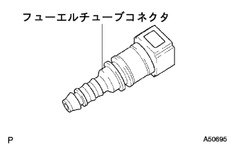
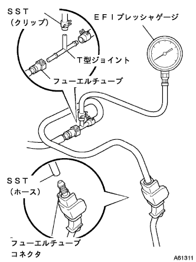

点検準備
新品のフユーエルチユーブを用意し、コネクタのみを取りはずす。
- □ 参 考 □
- 品番 23901-21060
|  |
燃料流出防止作業(要領は 参照)
参照)
フユーエルチユーブクランプをはずし、フユーエルチユーブ(フユーエルチユーブコネクタ)を切り離す。(要領は参照)
|  |
点検準備で用意したクイックコネクタとSSTおよび計器を組み付ける。
- SST
- 09268-41047
(90467-13001、95336-08070)
EFIフューエルプレッシャーゲージ[TB-707N]
T型ジョイント[TB727]
EFIフューエルプレッシャーゲージ[EFI-T8]
T型ジョイント[EFI5T]
こぼれたガソリンを拭き取る。
エンジンを始動する。
アイドル回転時の燃圧を測定する。
- 基準値
- 304-343kPa{3.1-3.5kgf/cm2}
エンジンを停止する。
エンジン停止後、5分間燃圧が変化しないことを確認する。
- 基準値
- 147kPa{1.5kgf/cm2}以上
- □ 参 考 □
- 基準値外の場合は、フユーエルポンプ、フユーエルプレツシヤレギユレータまたはインジエクタを点検する。
測定後、バッテリマイナスターミナルを切り離し、ガソリンが飛散しないように注意しながらSSTおよびフユーエルチユーブコネクタを取りはずす。
フユーエルチユーブ(フユーエルチユーブコネクタ)を接続する。